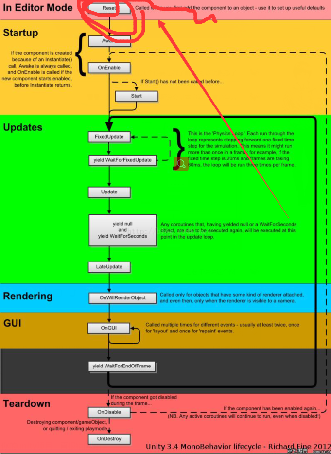

Unity基础
unity基础¶
unity工程结构¶
- Assets 包含所有的工程文件，是主要工作的地方
- Library 工程的数据库文件，可删除自动重建
- ProjectSettings 工程的配置文件
unity窗口¶
- Hierarchy层级
- Project工程
- Inspector查看
- Scene场景/Game游戏
Unity脚本基础¶
 1. Game Object最基础的游戏单位，一个最基本的Game Object仅包含一个Transform组件，用于对其进行位移，旋转和缩放。 2. MonoBehavior是所有Unity脚本的基类。
脚本序列化¶
讲脚本指定给场景中的游戏体，就可在对应游戏体的Inspector窗口中配置脚本实例的public成员变量初始值。 默认只有继承自MonoBehaviour的脚本才能序列化。如果一个普通c#类需要序列化需要添加'[System.Serializable]'属性。 unity只能序列化public类型的变量，且不能序列化属性。
组件式编程¶
- 组件的获取
1 2 3 4 5
Rigidbody rigid = this.gameObject.GetComponent<Rigidbody>(); if(rigid==null) { rigid = this.gameObject.AddComponent<Rigidbody>(); }
- Unity消息机制在组件间通信
SendMessage函数(效率比较低)
1 2 3 4 5 6 7 8 9 10 11 12
//TestScript.cs public class TestScript: MonoBehaviour{ void Start(){ this.gameObject.SendMessage("DoSomething"); } } //DoSomethingScript.cs public class DoSomethingScript: MonoBeHaviour{ public void DoSomething(){ Debug.Log("DoSomething"); } }
- 继承和组合
1 2 3 4 5 6 7 8 9 10 11 12 13 14 15 16
//TestScript.cs public class TestScript:MonoBehaviour{ void Start(){ this.gameObject.GetComponent<DoSomethingBase>().DoSomething(); } } //DoSomethingBase.cs public class DoSomethingBase:MonoBehaviour{ public abstract void DoSomething(); } //DoSomethingScript.cs public class DoSomethingScript:DoSomethingBase{ public override void DoSomething(){ Debug.Log("DoSomething"); } }
- 协程编程
协程函数需要使用关键字IEnumerator定义，并一定要使用关键字yield返回。协程函数不能直接调用，需要使用函数StartCoroutine将协程函数作为参数传入。
1 2 3 4 5 6 7 8 9 10 11 12 13 14 15 16 17 18 19 20 21
using System.Collections; using UnityEngine; public class CoroTest:MonoBehaviour{ void start(){ Coroutine coro = StartCoroutine(DoSomethingDelay(1.5f)); StartCoroutine(RunLoop()); } } IEnumerator DoSomethingDelay(float sec){ yield return new WaitForSeconds(sec); Debug.log("xxx"); yield return new WaitForSeconds(sec); StartCoroutine(DoSomethingDelay(1.5f)); } IEnumeraator RunLoop(){ while(ture){ Debug.log("xxx"); yield return 0; } }
预置文件Prefab和资源管理¶
当在场景中完成对Game Object的配置后，将其拖动到Object窗口中即创建了Prefab。 1. 删除场景中的实例不会影响到Project窗口中的Prefab。 2. 如果修改了场景中的实例，选择Inspector窗口右上角的Prefab->apple,Project窗口中保存的prefab则会自动同步到该修改的结果。 3. 如果修改了场景中的实例，选择Inspector窗口右上角的Prefab->Revert,则会返回到Prefab的设置中。 4. 如果修改了Prefab的某项设置，场景中的实例又没有修改过该项设置，场景中的实例则会自动同步到与Prefab相同的设置。
读取资源和实例化¶
1 | GameObject go = new GameObject("Game Object Name");
|
1 2 3 4 5 6 | public GameObject prefab;
public GameObject instance;
void start(){
instance = Instantiate(prefab);
Destroy(instance,0.1f);
}
|
1 2 3 4 5 6 7 | void start(){
GameObject prefab = Resource.Load<GameObject>("Player");
instance = Instantiate(prefab);
GameObject go =Resources.Load<GameObject>("Prefab名称");
Texture texture = Resources.Load<Texture>("贴图名称");
}
|
时间和动画¶
任何和动画效果相关的参数，比如移动速度，旋转速度等，在使用前都需要与Time.deltaTime相乘，才能保证在不同帧数下取得相对一致的动画效果。